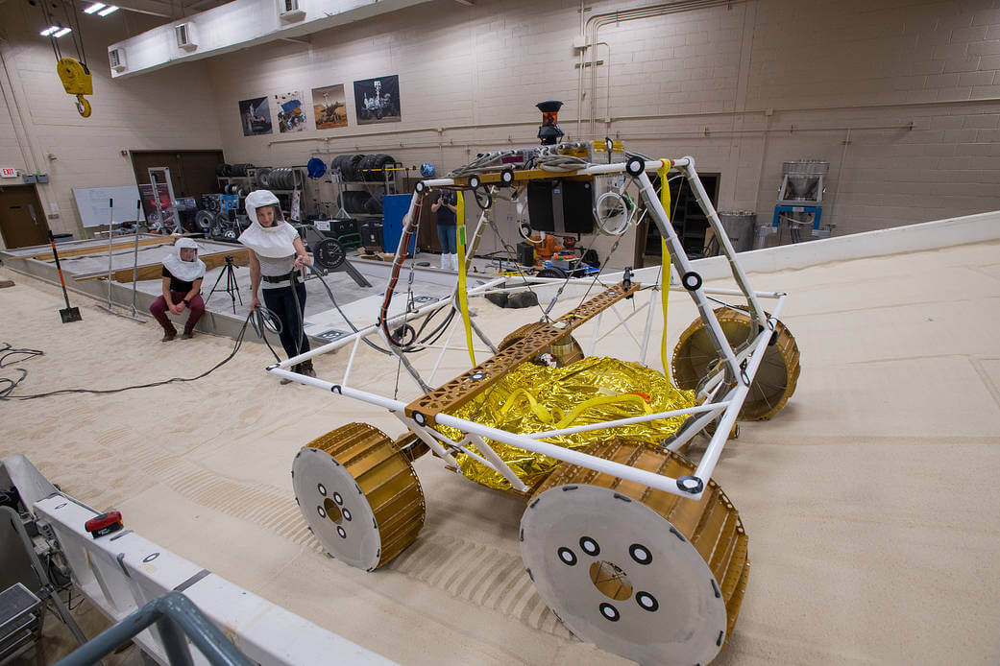
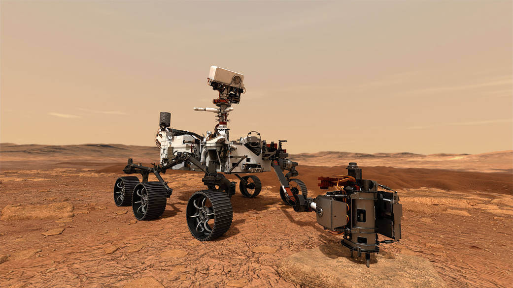

- 
- 
-

Since 1997, NASA has been discovering as much as they can about our neighboring planet.
NASA's Curiosity Rover Finds an Ancient Oasis on Mars.
An engineering model of the Volatiles Investigating Polar Exploration Rover, or VIPER, is tested in the Simulated Lunar Operations Laboratory at NASA’s Glenn Research Center. VIPER is a mobile robot that will roam around the Moon’s South Pole looking for and sampling water ice in the region where the first woman and next man will land in 2024 under the Artemis program.